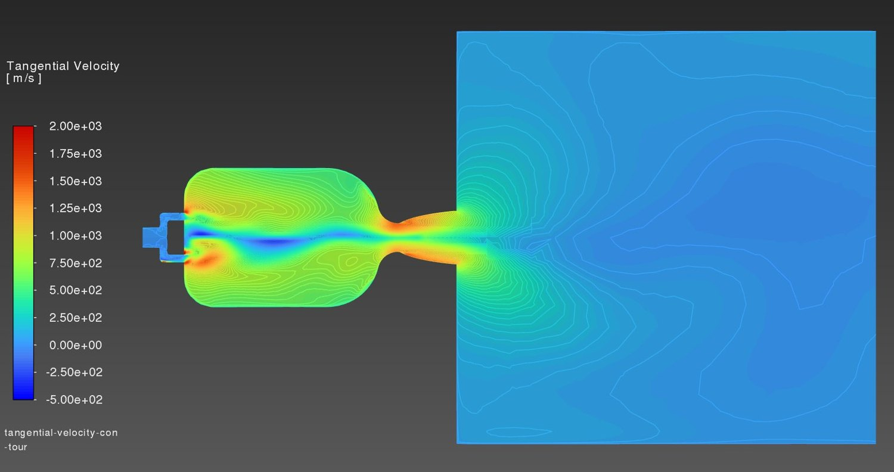
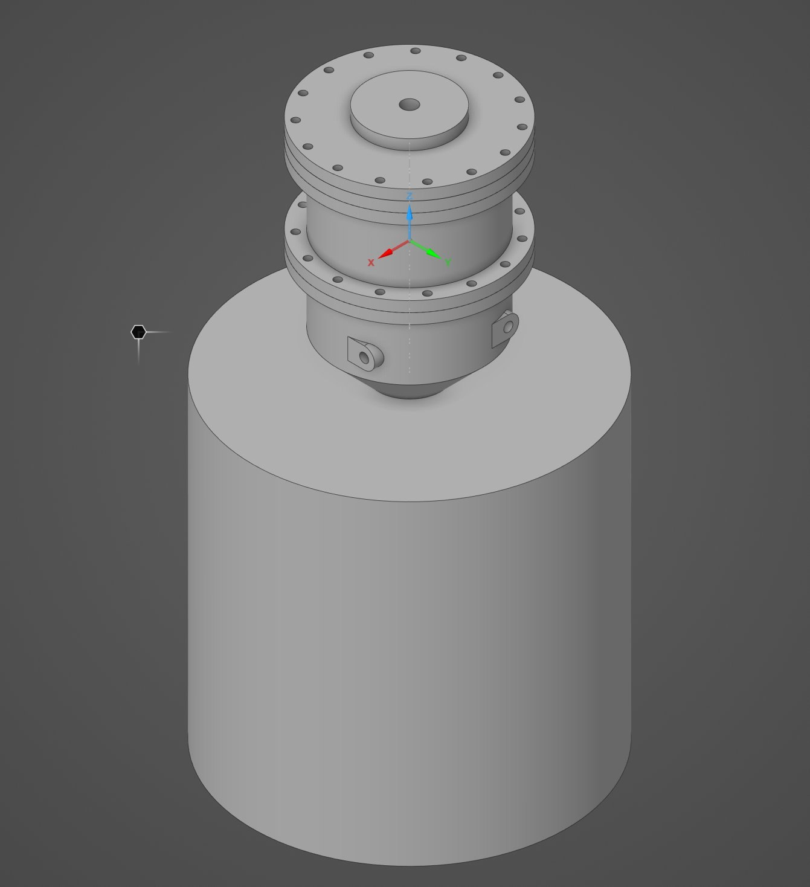
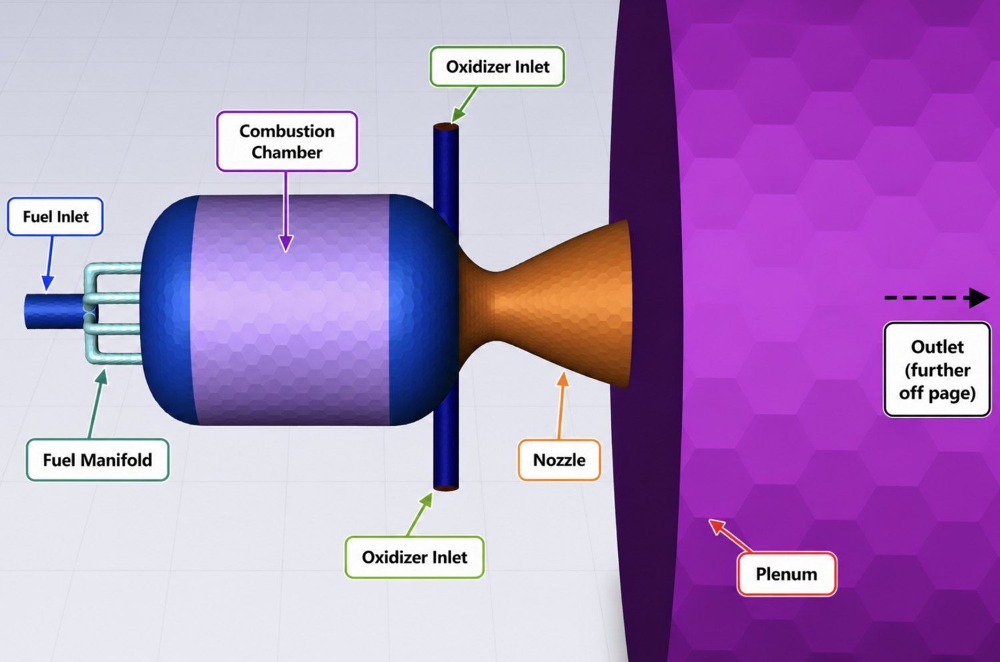
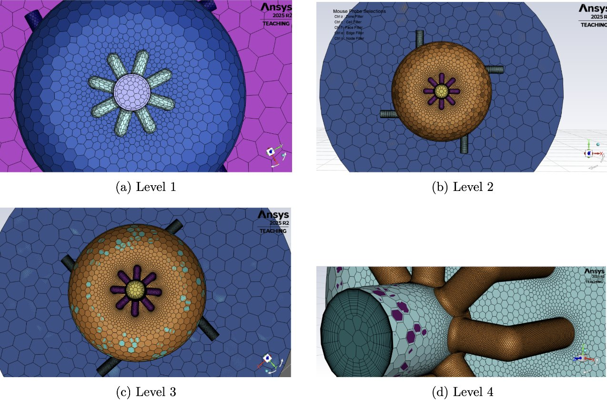
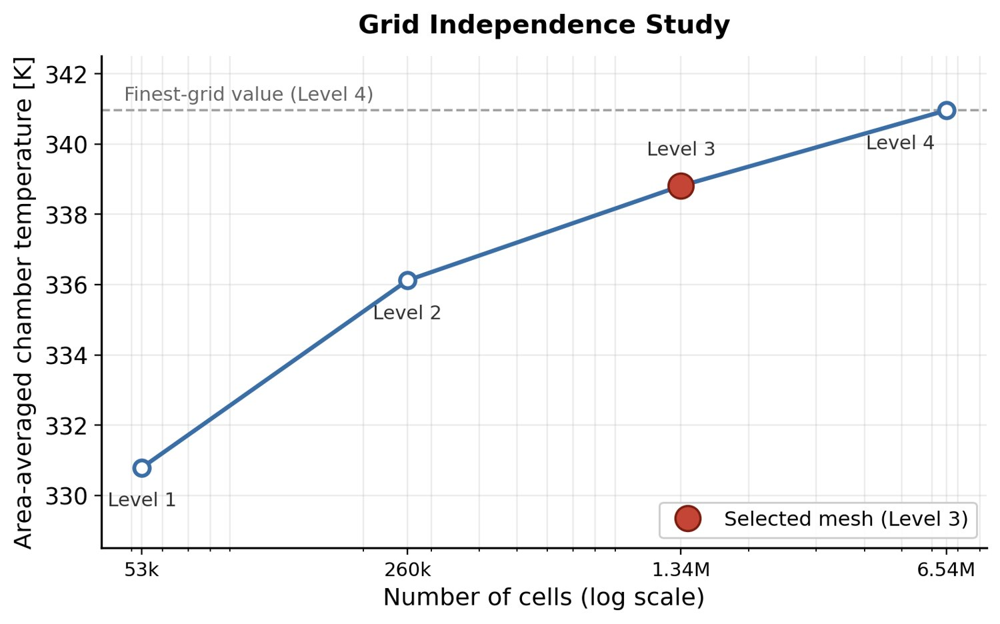
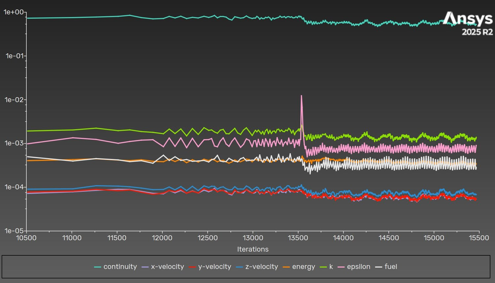
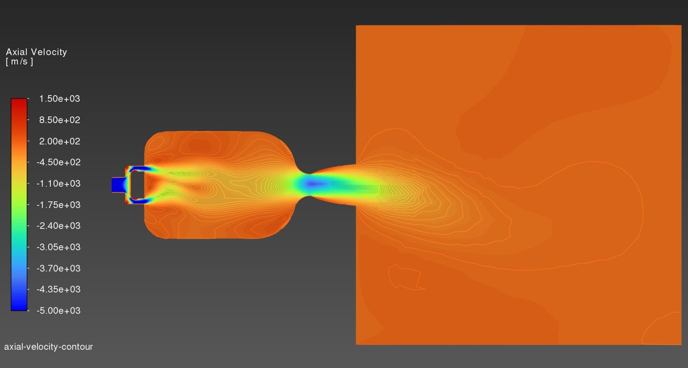
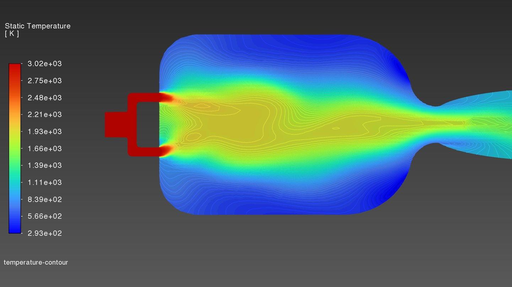
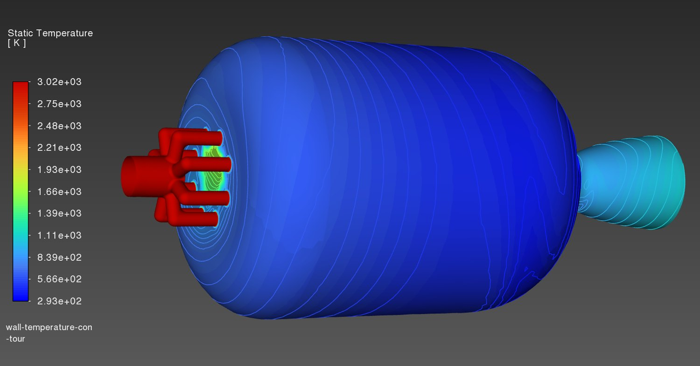

A cold-flow CFD study of a vortex-cooled rocket engine, asking a single sharp question: can a swirling cold outer flow passively shield the chamber wall from a hot core, with no active cooling circuit at all?
A vortex-cooled rocket engine injects propellant tangentially so the flow spins along the chamber wall, wrapping the hot core in a cooler outer layer. The wall protection is entirely passive, done by the flow structure itself rather than an active cooling circuit. I led a CFD study to test whether that idea actually holds.
Working with Sahil Savasere and Robert Contreras for MAE 185, I built a steady, three-dimensional cold-flow model of the engine in Ansys Fluent. Rather than simulate combustion, the model imposes a representative hot core by injecting the axial stream hot and the tangential stream cold, which turns the insulation question into one a non-reacting simulation can answer: where do the two streams go, and how does heat move between them?
Four oxidizer tubes meet the chamber wall off-axis, giving the pinwheel arrangement that generates the swirl. The internal volume was extracted from the CAD and tagged so the wall of interest stays isolated.


The chamber is 49.7 mm across with a 10 mm nozzle throat and a converging-diverging contour designed for an exit Mach number of 2.54. The chamber sidewall, the surface on which the insulation result is read, was kept as its own named selection so its thermal behavior could not be contaminated by the other surfaces.
A poly-hexcore mesh keeps numerical diffusion of the swirl low at a manageable cell count, with local refinement on the tubes, throat, and chamber core, and boundary layers on every wall.


| Level | Cells | Max skewness | Chamber temp (K) |
|---|---|---|---|
| 1 | 53,103 | 0.793 | 330.8 |
| 2 | 260,170 | 0.799 | 336.1 |
| 3 (used) | 1,336,280 | 0.657 | 338.8 |
| 4 | 6,541,592 | 0.600 | 341.0 |
A wall-normal coordinate check confirmed the near-wall mesh resolves the chamber and plenum walls, with elevated values confined to the high-velocity injectors and throat, consistent with the enhanced wall treatment used.
A strongly swirling confined flow never truly settles, so the solver and the convergence criteria were chosen to match that reality.
A pressure-based steady solver with the coupled scheme handled the strong pressure-velocity coupling of the swirl, with the PRESTO! pressure interpolation suited to rotational flow and second-order upwind discretization throughout. Turbulence used the Realizable k-ε model with enhanced wall treatment and curvature correction, chosen for rotating and recirculating flows. The two streams were modeled as separate tracked species with identical properties, so the species mass fraction acts as a passive tracer of where each stream goes and where they mix.
Because the vortex core is in continual unsteady motion, the residuals do not fall to low values; they plateau and oscillate in a steady band. Convergence was therefore judged on the leveling-off of monitored physical quantities, the area-weighted wall temperature and the global mass balance, not on residual magnitude.

The simulation confirms the intended bidirectional vortex, tracks how the streams mix, and answers the insulation question quantitatively.

A passive species tracer shows the axial and tangential streams remaining segregated at the head end and progressively mixing along the chamber. The central result is thermal: with a 3000 K core and a 300 K cold inlet, the area-averaged chamber wall settled at 498 K, an insulation effectiveness of η = 0.93. The wall sits roughly 93% of the way from the core temperature down toward the cold inlet, so the cold tangential vortex does the large majority of the wall protection. The only elevated wall temperatures sit right where the hot stream physically enters, not along the barrel the vortex is meant to shield.


The study is careful about its own boundaries. The Realizable k-ε closure assumes an isotropic turbulent viscosity, which over-diffuses strongly swirling flow, so the swirl and insulation may be biased; a Reynolds-stress closure would capture the anisotropy at higher cost. Combustion is not modeled, so the hot core is imposed rather than generated. The working fluid used the incompressible-ideal-gas law, accurate in the nearly uniform chamber pressure where the main results lie, but not in the nozzle, so the choked nozzle flow is qualitative and no exit Mach number is claimed from this solution. The plenum is artificial and oversized, and the study lacks experimental validation.
The clearest next step is to re-converge under the full ideal-gas law with a staged, limiter-assisted restart to make the nozzle quantitative, followed by a Reynolds-stress model and a comparison against oil-seeded flow visualization from the cold-flow test.